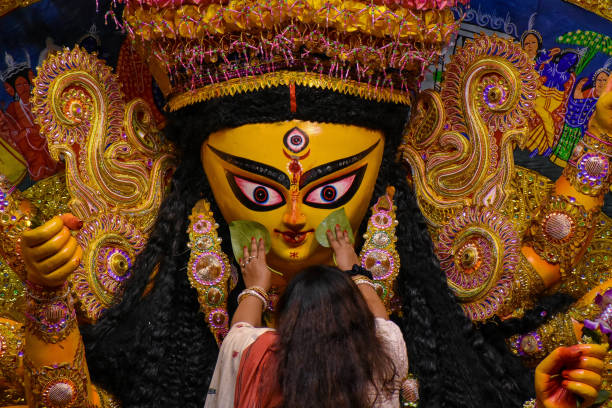

The vibrant beats of dhak drums and the artistic grandeur of pandals bring communities together in joyous celebration. Bengali literature, enriched by legends like Rabindranath Tagore and Satyajit Ray, continues to inspire generations. The state's folk traditions, from Baul music to Chhau dance, add to its cultural diversity. Alongside its artistic excellence, Bengal's culinary delights, like rosogolla and macher jhol, reflect its rich heritage.
